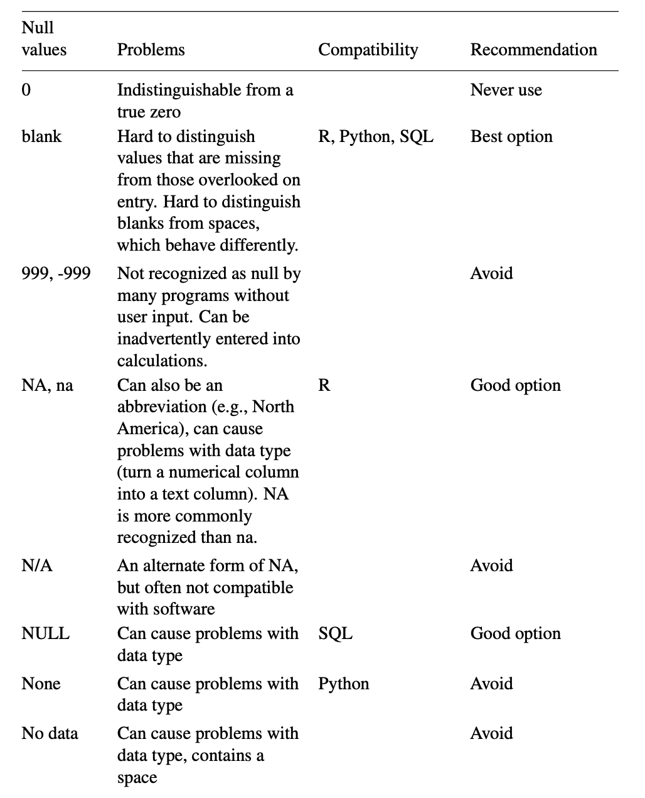

(Broman and Woo 2018Broman, Karl W., and Kara H. Woo. 2018. “Data Organization in Spreadsheets.” The American Statistician 72 (1): 2–10. https://doi.org/10.1080/00031305.2017.1375989.)
White EP, Baldridge E, Brym ZT, Locey KJ, McGlinn DJ, Supp SR. 2013. Nine simple ways to make it easier to (re)use your data. PeerJ PrePrints 1:e7v2 https://doi.org/10.7287/peerj.preprints.7v2
These two papers came up with several recommendations, rules and principles that are believed to facilitate data analysis based on spreadsheets, here is a simple conclusion (yet not complete):
Data sharing can be beneficial to scientific community as a whole and to individuals alike.
Good metadata should providing the following information(Michener et al. 1997, Zimmerman 2003, Strasser et al. 2012):
We can ask someelse to look over our metadata and proveide us with feedback about potential ambiguities.
There are some specific standards relevant to writing formal metadata: Ecological Metadata Language EML, Directory Interchange Format DIF. And some tools are mentioned: KNB Morpho, USGS xtime and FGDC workbook.
Always try to provide data in csv files. Problems may occur in displaying the data correctly when importing , not to mention proprietary formats like Excel.
If there are multiple files in a dataset, name those files in a consistent manner, use a same layout for the sake of automation process.
Choose consistent and good variable names, snake case(variable_name) and camel case(variableName) are recommended.(I’ve merged the variable naming section into this general principle).
An additional insight is that one should never use font color or highlight in a spreadsheet, since it’s hard to transform these features into meaningful information for most programs when importing, though they may be aesthetically pleasing.
Of great concern is that how should we represent missing data in spreadsheets in a proper manner, so that it won’t cause any problems when they get imported to data processing tools. The following table is of great help:
Figure 1: Commonly used null values
Since I spend most time using R and a bit on Python and SQL, NA and blank seem to be two preferable options to represent missing values.
YYYY--MM--DD as date formatWhen enter dates, both paper strongly recomment using the global “ISO 8601” standard —- to input date as YYYY-MM--DD.
While Excel store its date-format data as a number (在 Windows 系统上是从 1900 年 1 月 1 日起算的天数，而 Mac 上是从 1904 年 1 月 1 日起算的天数), it also tend to turn other things into dates. For example, some gene symbols(like “Oct-4”) may be interpreted as dates. So it’s a positive advantage to us to store dates as text in Microsoft Excel.
However, if a column already contain dates, Excel will convert them to a text value of their underlying numeric representation.The best way to do this is to begin a date with a apostrophe, like this "2014-06-14". Or we can use multiple columns to represent a data, say separate 20140614 into 3 columns, with each containing 2014, 06 and 14.
Concepts of tidy data are discussed in 2.1.
This means there should be no calculations and converting in the data we share. At lease providing both the raw and processed forms of the data, and explaining the differences.
Keep all versions of the data files, and consider using a formal version control system.
Data entry is a error-prone task, and the data validation feature in Microsoft Excel is recommended, this can be seen as the most basic quality control one can perform in the early stage of data analysis.
See https://creativecommons.org/licenses/by-nc-sa/2.5/cn/legalcode.